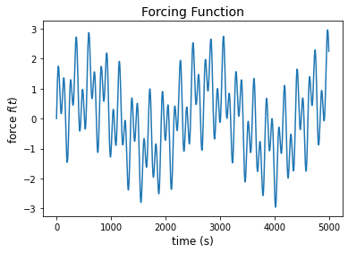
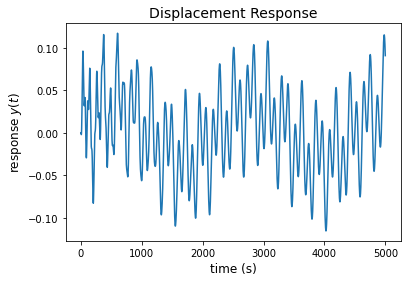
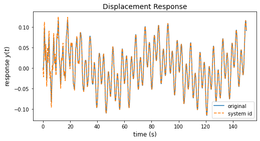
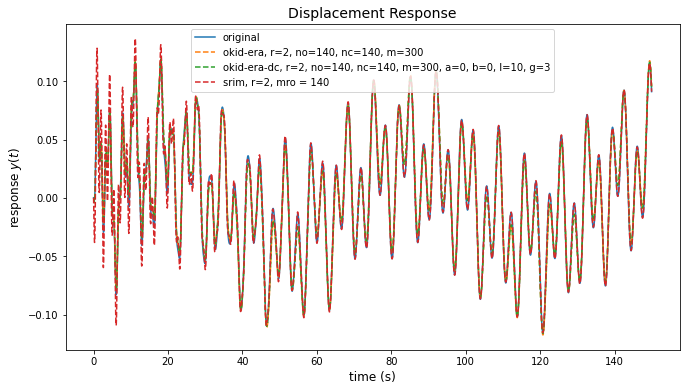
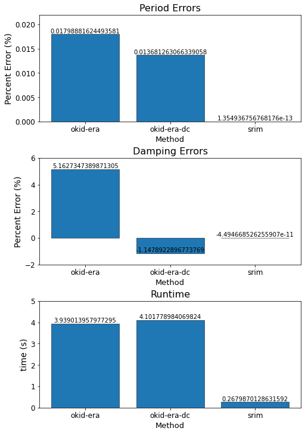

System Identification with the ssid package#
[1]:
import numpy as np
from matplotlib import pyplot as plt
from ssid import system, markov, realize, modes
from control.matlab import ss
from control.matlab import lsim
from control.matlab import impulse as _impulse
def impulse(*args, **kwds):
a,t = _impulse(*args, **kwds)
return a.squeeze(),t
from collections import defaultdict
from time import time
Define a SDOF system#
parameter |
value |
|---|---|
m |
mass |
k |
stiffness |
c |
damping coefficient |
nt |
number of timesteps |
dt |
timestep |

[2]:
# parameters of SDOF system
mass = 1 # mass
k = 30 # stiffness
zeta = 0.01 # damping ratio
omega_n = np.sqrt(k/mass) # natural frequency (rad/s)
c = 2*zeta*mass*omega_n # damping coefficient
# forcing frequencies (rad/s)
omega_f = [0.017*omega_n, 0.14*omega_n, 0.34*omega_n]
T_n = 2*np.pi/omega_n
print("natural period", T_n)
print("forcing periods", [2*np.pi/omega for omega in omega_f])
natural period 1.1471474419090952
forcing periods [67.4792612887703, 8.19391029935068, 3.3739630644385152]
[3]:
# forcing function
nt = 5000 # number of timesteps
dt = 0.03 # timestep
tf = nt*dt # final time
t = np.arange(start = 0, stop = tf, step = dt)
f = np.sum(np.sin([omega*t for omega in omega_f]), axis=0)
plt.plot(f)
plt.xlabel("time (s)", fontsize=12)
plt.ylabel(r"force $f(t)$", fontsize=12)
plt.title("Forcing Function", fontsize=14);

[4]:
# displacement response (analytical solution)
omega_D = omega_n*np.sqrt(1-zeta**2)
y = np.zeros((3,nt))
for i,omega in enumerate(omega_f):
C3 = (1/k)*(1-(omega/omega_n)**2)/((1-(omega/omega_n)**2)**2+(2*zeta*omega/omega_n))**2
C4 = -(2*zeta*omega/omega_n)*(1-(omega/omega_n)**2)/((1-(omega/omega_n)**2)**2+(2*zeta*omega/omega_n))**2
C1 = -C4
C2 = (zeta*omega_n*C1-omega*C3)/omega_D
y[i,:] = np.exp(-zeta*omega_n*t)*(C1*np.cos(omega_D*t)+C2*np.sin(omega_D*t)) + C3*np.sin(omega*t) + C4*np.cos(omega*t)
y = np.sum(y,axis=0)
plt.plot(y)
plt.xlabel("time (s)", fontsize=12)
plt.ylabel(r"response $y(t)$", fontsize=12)
plt.title("Displacement Response", fontsize=14);

[5]:
# alternative test with El Centro motion
if False:
import sdof
from quakeio.elcentro import accel as elcentro
f = elcentro.data
dt = elcentro["time_step"]
t = np.arange(0, f.size*dt, dt)
*_, y = sdof.integrate(mass,c,k,f,dt)
fig, ax = plt.subplots(1,2,figsize=(12,4))
ax[0].plot(f)
ax[0].set_xlabel("time (s)", fontsize=12)
ax[0].set_ylabel(r"force $f(t)$", fontsize=12)
ax[0].set_title("El Centro Forcing Function", fontsize=14)
ax[1].plot(y)
ax[1].set_xlabel("time (s)", fontsize=12)
ax[1].set_ylabel(r"response $y(t)$", fontsize=12)
ax[1].set_title("Displacement Response", fontsize=14);
Perform System Identification#
[6]:
# Generate a state space realization of the system
A,B,C,D = system.system(input=f, output=y)
[7]:
# Reproduce the response with the state space model
y_ssid = lsim(ss(A,B,C,D,dt),f,t)[0]
fig, ax = plt.subplots(figsize=(8,4))
ax.plot(t,y,label="original")
ax.plot(t,y_ssid,"--",label=f"system id")
ax.set_xlabel("time (s)", fontsize=12)
ax.set_ylabel(r"response $y(t)$", fontsize=12)
ax.set_title("Displacement Response", fontsize=14)
ax.legend();

[8]:
# Obtain natural period and damping ratio from the state space model
ss_modes = modes.modes((A,B,C,D),dt)
print("computed period:", [1/f for f in sorted([ss_modes[str(i)]['freq'] for i in list(ss_modes.keys())])])
print("natural period", T_n)
print("period percent error:", [100*(1/f-T_n)/(T_n) for f in sorted([ss_modes[str(i)]['freq'] for i in list(ss_modes.keys())])])
print("computed damping ratio:", [d for d in [ss_modes[str(i)]['damp'] for i in list(ss_modes.keys())]])
print("damping ratio percent error:", [100*(d-zeta)/zeta for d in [ss_modes[str(i)]['damp'] for i in list(ss_modes.keys())]])
computed period: [3.3884227005706307, 1.1471474419090963, 0.04135880650685608]
natural period 1.1471474419090952
period percent error: [195.378133340173, 9.678119691201257e-14, -96.3946389979281]
computed damping ratio: [0.00999999999999339, 0.7404261118326836, 0.3624804673567012]
damping ratio percent error: [-6.611031166947612e-11, 7304.261118326836, 3524.8046735670114]
/mnt/c/Users/16507/Documents/GitHub/SystemIdentification/src/ssid/modes.py:36: RuntimeWarning: invalid value encountered in true_divide
damp = -np.real(Lam)/Omega
Breakdown of System Identification Methods#
General Parameters#
parameter |
value |
|---|---|
|
number of output channels |
|
number of input channels |
|
number of timesteps |
|
timestep |
Specific to Observer Kalman Identification (OKID)#
parameter |
value |
|---|---|
|
number of Markov parameters to compute (at most = nt) |
Specific to Eigensystem Realization Algorithm (ERA)#
parameter |
value |
|---|---|
|
number of observability parameters |
|
number of controllability parameters |
|
reduced model order |
Specific to Data Correlations (DC)#
parameter |
value |
|---|---|
|
(alpha) number of additional block rows in Hankel matrix of correlation matrices |
|
(beta) number of additional block columns in Hankel matrix of correlation matrices |
|
initial lag |
|
lag (gap) between correlations |
Specific to System Realization with Information Matrix (SRIM)#
parameter |
value |
|---|---|
|
number of steps used for identification (prediction horizon) |
[9]:
# Set parameters
m = 300
no = 140
nc = 140
r = 2
a = 0
b = 0
l = 10
g = 3
ns = 140
periods = defaultdict(dict)
damping = defaultdict(dict)
times = defaultdict(dict)
[10]:
# OKID-ERA
method = "okid-era"
time0 = time()
A,B,C,D = system.system(method="okid-era", input=f, output=y, m=m, no=no, nc=nc, r=r)
times[method] = time()-time0
y_okid_era = lsim(ss(A,B,C,D,dt),f,t)[0]
ss_modes = modes.modes((A,B,C,D),dt)
periods[method] = [1/f for f in sorted([ss_modes[str(i)]['freq'] for i in list(ss_modes.keys())])]
# print("computed period:", periods[method])
# print("natural period", T_n)
print("period percent error:", [100*(T-T_n)/(T_n) for T in periods[method]])
damping[method] = [d for d in [ss_modes[str(i)]['damp'] for i in list(ss_modes.keys())]]
# print("computed damping ratio:", damping[method])
print("damping ratio percent error:", [100*(d-zeta)/zeta for d in damping[method]])
period percent error: [0.01798881624493581]
damping ratio percent error: [5.1627347389871305]
[11]:
# OKID-ERA-DC
method = "okid-era-dc"
time0 = time()
A,B,C,D = system.system(method="okid-era-dc", input=f, output=y, m=m, no=no, nc=nc, r=r, a=a, b=b, l=l, g=g)
times[method] = time()-time0
y_okid_era_dc = lsim(ss(A,B,C,D,dt),f,t)[0]
ss_modes = modes.modes((A,B,C,D),dt)
periods[method] = [1/f for f in sorted([ss_modes[str(i)]['freq'] for i in list(ss_modes.keys())])]
# print("computed period:", periods[method])
# print("natural period", T_n)
print("period percent error:", [100*(T-T_n)/(T_n) for T in periods[method]])
damping[method] = [d for d in [ss_modes[str(i)]['damp'] for i in list(ss_modes.keys())]]
# print("computed damping ratio:", damping[method])
print("damping ratio percent error:", [100*(d-zeta)/zeta for d in damping[method]])
period percent error: [0.013681263066339058]
damping ratio percent error: [-1.1478922896773769]
[12]:
# SRIM
method = "srim"
time0 = time()
A,B,C,D = system.system(method="srim", input=f, output=y, ns=ns, r=r)
times[method] = time()-time0
y_srim = lsim(ss(A,B,C,D,dt),f,t)[0]
ss_modes = modes.modes((A,B,C,D),dt)
periods[method] = [1/f for f in sorted([ss_modes[str(i)]['freq'] for i in list(ss_modes.keys())])]
# print("computed period:", periods[method])
# print("natural period", T_n)
print("period percent error:", [100*(T-T_n)/(T_n) for T in periods[method]])
damping[method] = [d for d in [ss_modes[str(i)]['damp'] for i in list(ss_modes.keys())]]
# print("computed damping ratio:", damping[method])
print("damping ratio percent error:", [100*(d-zeta)/zeta for d in damping[method]])
period percent error: [1.354936756768176e-13]
damping ratio percent error: [-4.494668526255907e-11]
[13]:
fig, ax = plt.subplots(figsize=(11,6))
ax.plot(t,y,label="original")
ax.plot(t,y_okid_era,"--",label=f"okid-era, {r=}, {no=}, {nc=}, {m=}")
ax.plot(t,y_okid_era_dc,"--",label=f"okid-era-dc, {r=}, {no=}, {nc=}, {m=}, {a=}, {b=}, {l=}, {g=}")
ax.plot(t,y_srim,"--",label=f"srim, {r=}, mro = {nc}")
ax.set_xlabel("time (s)", fontsize=12)
ax.set_ylabel(r"response $y(t)$", fontsize=12)
ax.set_title("Displacement Response", fontsize=14)
ax.legend();

[14]:
fig, ax = plt.subplots(3, 1, figsize=(7,10), constrained_layout=True)
methods = ["okid-era", "okid-era-dc", "srim"]
period_errors = [100*(periods[method][0]-T_n)/T_n for method in methods]
ax[0].bar(methods, period_errors, color=None, edgecolor="k", linewidth=0.5)
ax[0].set_title("Period Errors", fontsize=16)
ax[0].set_ylabel("Percent Error (%)", fontsize=14)
ax[0].set_xlabel("Method", fontsize=13)
ax[0].tick_params(axis='x', labelsize=12)
ax[0].tick_params(axis='y', labelsize=12)
ax[0].set_ylim([0,0.022])
damping_errors = [100*(damping[method][0]-zeta)/zeta for method in methods]
ax[1].bar(methods, damping_errors, color=None, edgecolor="k", linewidth=0.5)
ax[1].set_title("Damping Errors", fontsize=16)
ax[1].set_ylabel("Percent Error (%)", fontsize=14)
ax[1].set_xlabel("Method", fontsize=13)
ax[1].tick_params(axis='x', labelsize=12)
ax[1].tick_params(axis='y', labelsize=12)
ax[1].set_ylim([-2,6])
times_list = [times[method] for method in methods]
ax[2].bar(methods, times_list, color=None, edgecolor="k", linewidth=0.5)
ax[2].set_title("Runtime", fontsize=16)
ax[2].set_ylabel("time (s)", fontsize=14)
ax[2].set_xlabel("Method", fontsize=13)
ax[2].tick_params(axis='x', labelsize=12)
ax[2].tick_params(axis='y', labelsize=12)
ax[2].set_ylim([0,5])
for i,error in zip([0,1,2],[period_errors,damping_errors,times_list]):
rects = ax[i].patches
for rect, label in zip(rects, error):
height = rect.get_height()
ax[i].text(
rect.get_x() + rect.get_width() / 2, height, label, ha="center", va="bottom"
);
